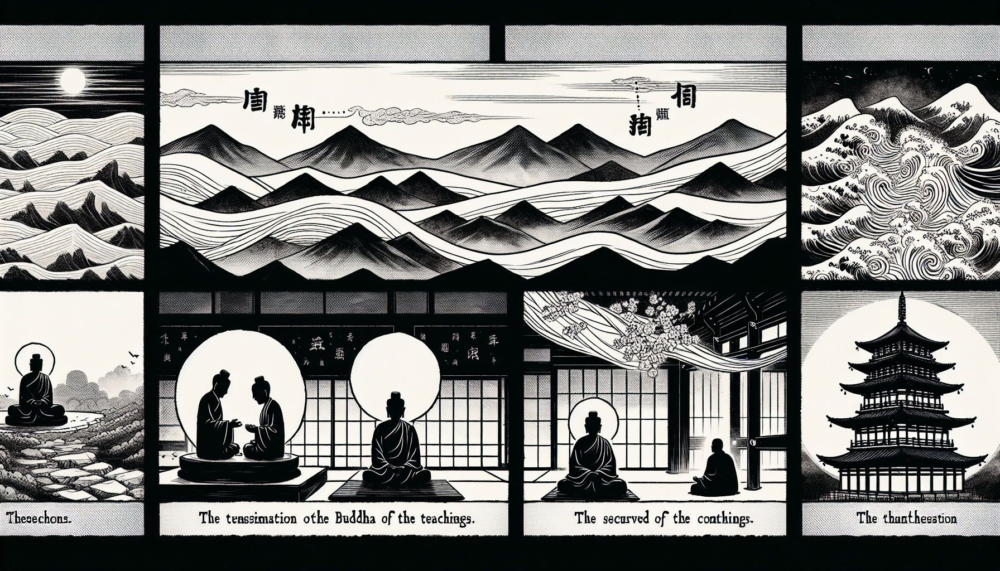

七十五巻 巻一覧
正法眼藏第32 傳衣
本ページは各巻の紹介ページです。tools/gen_web_volumes.py が doc/正法眼蔵.txt から要点の短い抜粋を載せています（全文の引用ではありません）。
出典（原文）: https://shomonji.or.jp/zazen/doc/genzou.html
原文・現代語訳の全文は 全文ページを参照してください。
この巻の紹介（概要）
道元『正法眼蔵』七十五巻の第32篇「傳衣」です。禅籍・経典への引用や語の行間が重なりやすいので、一度ですべてを要約に還元しない読み方を推奨します。問答 Bot では巻スコープにこの題名を含めると応答が安定しやすいことがあります。
語彙の足場
- 題名語：巻題「傳衣」は、道元が本章で特に扱う論点の看板です。辞書義だけに固定せず、原文中の用例で意味を確かめます。
- 引用と典故：公案・経文の引用は、一字一句の照応（何に答えているか）を押さえると全体が見えやすくなります。
- 学び方：抜粋だけでも音読し、分からない箇所は印を付けて後から問うとよいです。
原文（要点の抜粋）
当巻の冒頭付近からの短い抜粋です。長い引用は載せていません。全文は全文ページを参照してください。出典はリポジトリ内 doc/正法眼蔵.txt です。原文の参照元: https://shomonji.or.jp/zazen/doc/genzou.html
佛佛正傳の衣法、まさに震旦に正傳することは、少林の高祖のみなり。高祖はすなはち釋迦牟尼佛より第二十八代の祖師なり。西天二十八代、嫡嫡あひつたはれ、震旦に六代、まのあたりに正傳す。西天東地都盧三十三代なり。
第三十三代の祖、大鑑禪師、この衣法を黄梅の夜半に正傳し、生前護持しきたる。いまなほ曹谿山寶林寺に安置せり。諸代の帝王あひつぎて内裏に請入して供養す、神物護持せるものなり。
唐朝の中宗肅宗代宗、しきりに歸内供養しき。請するにもおくるにも、勅使をつかはし、詔をたまふ。すなはちこれおもくする儀なり。代宗皇帝、あるとき佛衣を曹谿山におくる詔にいはく、
今遣鎭國大將軍劉崇景、頂戴而送。朕爲之國寶。卿可於本寺安置、令僧衆親承宗旨者、嚴加守護、勿令遺墜（今、鎭國大將軍劉崇景をして、頂戴して送らしむ。朕、之を國寶とす。卿、本寺に安置し、僧衆の親しく宗旨を承けしものをして嚴しく守護を加へ、遺墜せしむることなからしむべし）。
しかあればすなはち、數代の帝者、ともにくにの重寶とせり。まことに無量恆河沙の三千世界を統領せんよりも、この佛衣くににたもてるは、ことにすぐれたる大寶なり。卞璧に準ずべからざるものなり。たとひ傳國璽となるとも、いかでか傳佛の奇寶とならん。大唐よりこのかた瞻禮せる緇白、かならず信法の大機なり。宿善のたすくるにあらずよりは、いかでかこの身をもちて、まのあたり佛佛正傳の佛衣を瞻禮することあらん。信受する皮肉骨髓はよろこぶべし。信受することあたはざらんは、みづからなりといふとも、うらむべし、佛種子にあらざることを。
俗なほいはく、その人の行李をみるは、すなはちその人を見なり。いま佛衣を瞻禮せんは、すなはち佛をみたてまつるなり。百千萬の塔を起立して、この佛衣に供養すべし。天上海中にも、こころあらんはおもくすべし。人間にも、轉輪聖王等のまことをしり、すぐれたるをしらんは、おもくすべきなり。
あはれむべし、よよに國主となれるやから、わがくにに重寶のあるをしらざること。ままに道士の教にまどはされて、佛法を癈せるおほし。その時、袈裟をかけず、圓頂に葉巾をいただく。講ずるところは延壽長年の方なり。唐朝にもあり、宋朝にもあり。これらのたぐひは、國主なりといへども國民よりもいやしかるべきなり。
しづかに觀察しつべし、わがくにに佛衣とどまりて現在せり。衣佛國土なるべきかとも思惟すべきなり。舍利等よりもすぐれたるべし。舍利は輪王にもあり、師子にもあり、人にもあり、乃至辟支佛等にもあり。しかあれども、輪王には袈裟なし、師子に袈裟なし、人に袈裟なし。ひとり諸佛のみに袈裟あり、ふかく信受すべし。
いまの愚人、おほく舍利はおもくすといへども、袈裟をしらず、護持すべきとしれるものまれなり。これすなはち先來より袈裟のおもきことをきけるものまれなり、佛法正傳いまだきかざるがゆへにしかあるなり。
つらつら釋尊在世をおもひやれば、わづかに二千餘年なり。國寶神器のいまにつたはれるも、これよりもすぎてふるくなれるもおほし。この佛法佛衣は、ちかくあらたなり。若田若里に展轉せんこと、たとひ五十展轉なれりとも、その益これ妙なるべし。かれなほ功徳あらたなり。この佛衣、かれとおなじかるべし。かれは正嫡より正傳せず、これは正嫡より正傳せり。
しるべし、四句偈をきくに得道す、一句子をきくに得道す。四句偈および一句子、なにとしてか恁麼の靈驗ある。いはゆる佛法なるによりてなり。いま一頂衣九品衣、まさしく佛法より正傳せり。四句偈よりも劣なるべからず、一句法よりも驗なかるべからず。
このゆゑに、二千餘年よりこのかた、信行法行の諸機ともに隨佛學者、みな袈裟を護持して身心とせるものなり。諸佛の正法にくらきたぐひは袈裟を崇重せざるなり。いま釋提桓因および阿那跋達多龍王等、ともに在家の天主なりといへども、龍王なりといへども、袈裟を護持せり。
図解（4コマ・AI生成）
教義の根拠は原文・出典に従い、漫画は比喩の補助に留めてください。

深掘り（読解のコツ）
- 道元文は定義の羅列に見えても、多くの場合誤解への遮断と正伝の姿勢が背骨になっています。
- 「当体」「現成」「即」などの語が出たら、その巻独自の差別相にどう接続しているかをメモしておくとよいです。